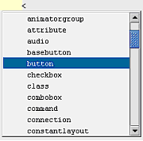
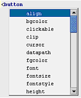
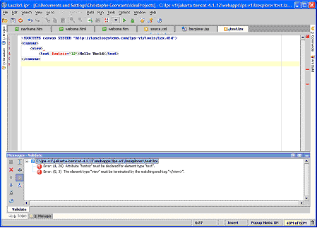

LZX source files are text files. Any standard text editor such as Notepad (on Windows) or TextEdit (on MacOS) can be used to edit them.
LZX source files are a particular type of text file:
they are XML files. An
XML-aware editorsuch as
Eclipse,
BBEdit, or
Emacs(with
psgml-mode
or
nxml-mode
) will provide additional editing facilities such
as automatic indentation, syntax highlighting (coloring
markup characters such as
<and tag names such as
<canvas>
[unknown tag]
), and well-formedness checking (letting you know when you
have an unbalanced
<or quotation mark).
To configure an XML-aware editor to edit LZX files, you
must configure it to edit those files in XML mode. This is
done by registering the
lzxextension with the XML mode of the
editor. How to do this depends on the exact editor; this
chapter gives instructions for some popular editors.
An XML schemalists the tag and attribute names that can occur within an XML document. Many XML editing tools are schema-aware. These tools can associate an XML document with a schema file, and use the schema file for code completion(to complete a tag or attribute name, or suggest a list of valid attribute values) and validation(to indicate invalid tag or attribute names within the editor, so that you don't have to wait until you compile the file).
The method for associating an XML document with a schema file depends on the editor. This chapter gives instructions for some popular editors.
There are three types of schemas in popular use: DTDs,
XSD, and RNG (and its associated format RNC). The LZX schema
is distributed in each of these formats. They can be found in
the
lps/toolsdirectory.
A
Document Type Definition(DTD) is the
oldest type, and is recognized by the most editors.
Unfortunately, the DTD format is very weak compared with the
other schema description languages, and can't indicate
certain contextual information such as that a
<dataset>
[unknown tag]
can contain arbitrary XML. A DTD should only be used in an
editor that doesn't support the other formats.
W3 and OASIS are standards bodies. The W3 standard for describing XML documents is the XML Schema Definition (XSD). The OASIS standard is RELAXNG. RNG and RNC files are RELAXNG files that contain schema definitions. RNG files are in XML; RNC files are intended to be human-readable.
Eclipse is an open source development environment created by IBM and maintained by the Eclipse Foundation. You can use different Eclipse plug-ins to develop LZX programs.
There are four steps to using Eclipse with XMLBuddy
Step 1: Download Eclipse
Download Eclipse from http://www.eclipse.org/downloads/index.php.
Step 2: Download XMLBuddy, an XML plugin for Eclipse
Download XMLBuddy from http://www.xmlbuddy.com. Get the right version for your Eclipse.
Installation is simple. After you unzip XMLBuddy, just drag the folder into your eclipse/plugins folder.
Step 3: Configure Eclipse to use XMLBuddy for
files*.lzx
In Eclipse:
Go to menu: Window -> Preferences
Twist down "Workbench", and select "File Associations"
Click "Add" next to the "File Types" box and
enter
*.lzx
Click "Add" next to the "Associated Editors" box and select XMLBuddy
Step 4: Configure XMLBuddy to use the LZX schema
for
canvasfiles
Go to menu: Window -> Preferences
Twist down XMLBuddy, and then XML, and then Validation
Click on DTD
Click "New..."
In the "New Default DTD" dialog, enter:
Root Name: canvas PUBLIC Id:
-//Laszlo Systems, Inc.//DTD LZX 2003/05//EN SYSTEM
Id:
http://www.laszlosystems.com/lps/tools/lzx.dtdStep 5: Configure XMLBuddy to use the LZX schema
for
libraryfiles
Repeat steps (4-5), but with a Root Name of "library".
For GNUEmacs, an XML mode that understands RELAX-NG schemas at http://www.thaiopensource.com/download/and a discussion group for this package at http://groups.yahoo.com/group/emacs-nxml-mode/.
FIXME:Describe how to install this mode.
The
lzx.elfile tells emacs to recognize
files as XML files.
With the DTD, this provides syntax-directed editing and
validation of XML entities in LZX files.*.lzx
If mmm-mode is installed, this file will also create an
mmm submode to recognize the content of
<method>
[unknown tag]
and
<script>
[unknown tag]
tags as JavaScript, and direct mmm to use this submode for
files. This
provides syntax coloring and intelligent indentation and
navigation for JavaScript code within LZX files.*.lzx
Copy lzx.el into a directory on the load-path, optionally byte-compile it (using M-x byte-compile-file), and place the following lines into your .emacs:
(add-to-list 'load-path
"path/to/mmm-mode-0.4.7") (load-library "mmm-mode")
(require 'mmm-mode) (require 'lzx)(If you don't wish to use mmm mode, only the last line is required.)
If you want mmm mode to be invoked automatically when you open a file, add the following line to your .emacs file:
(mmm-add-find-file-hook)
Install the lzx.vim syntax file.
FIXME:See lzx.vim syntax file in //depot/adam/sandbox
Table 50.1. VIM Editing Keys
`[mark]
| will jump you to the appropriate column where the mark was set |
'[mark]
| will only jump you to the beginning of the correct line. |
Also, the mark "[" is set to the point where you last entered insert mode. One often has the problem of wanting to leave insert mode where editing began. you can now do this with the following remapping
imap ^D <ESC>`[
Now, if you hit control-D in insert mode, you leave where you entered the insert mode.
Even more useful is the ability to repeat a previous command without changing the cursor position. Since this is pretty much always the behavior you want, you can remap ".", or you could use some other combination.
noremap . .`[
IntelliJ by JetBrains ( www.jetbrains.com) is currently one of the most popular Java IDEs. IntelliJ also provides very good support for XML, and is therefore an excellent tool for developing OpenLaszlo applications. IntelliJ is particularly well suited for Java developers who want to manage the full life-cycle of an application using a single development environment.
This document describes the steps required to optimize the IntelliJ environment for the development of Laszlo applications.
In the main menu, select Options>IDE Settings>File Types
Select XML files in the Recognized File Types box
Click Add for the Registered extensions box
Type lzx as the new extension and click OK
Click OK to close the IDE settings dialog box
In IntelliJ, create a new file with the lzx extension, for example test.lzx
Type the following declaration as the first line of the file:
<!DOCTYPE canvas SYSTEM
"http://laszlosystems.com/lps-v1/tools/lzx.dtd">
The dtd URL appears in red. Click anywhere in the URL: a light bulb appears to the left of the line
Click the light bulb and select Fetch External Resource from the popup window. The DTD is fetched into an IntelliJ system file:
You are now ready to develop your OpenLaszlo application, leveraging the rich XML and code completion features provided by IntelliJ.
Type the following line as the first line of your .lzx source files:
<!DOCTYPE canvas SYSTEM
"http://laszlosystems.com/lps-v1/tools/lzx.dtd">
Enjoy IntelliJ rich code completion features. For example:

Type the < character: a list of available LZX tags is displayed in a drop down list. Select the tag you want to insert.

After typing an LZX tag name, a list of LZX tag attributes is displayed in a drop down list. Select the attribute you want to insert.
You can press CTRL+SPACE to display a popup window with a list of LZX tag attributes
In the main menu select Tools>Validate
If your XML document is not well formed or not valid (not compliant with the DTD), errors are reported in the Validate panel that opens at the bottom of the screen. Double-click an error in the list to position the cursor at the location of the error in the code.

OpenLaszlo applications can be written with a namespace:
<canvas
xlmns="http://www.laszlosystems.com/2003/05/lzx">...</canvas>or without:
<canvas>...</canvas>If there is no namespace, the compiler defaults it to the LZX namespace ( http://www.laszlosystems.com/2003/05/lzx").
As of OpenLaszlo release 3.1, the schema in
lax.rnchas three deficiencies:
- It only works for sources that include the namespace declaration; e.g. it won't validate <canvas/> because it doesn't declare any elements in the empty namespace.
- It only knows about the foundation classes, not the components; e.g. it won't validate <canvas xmlns="..."><button/></canvas> because <button> isn't a foundation class.
- It isn't aware of tags that are defined in the application or its libraries; e.g. <canvas xmlns="..."><class name="myclass"/><myclass/></canvas>
The difficulty is that the <class> tag in LZX actually extends the schema by adding new tags and attributes. We have a hand-written basic schema (WEB-INF/lps/schema/lzx.rnc) which is used to start with, but then user and system component libraries can extend the schema, depending on the application.
<window>
[unknown tag]
, for example, is defined in a source library in
lps/components/lz/window.lzx, so it is not in the base
schema. So it is difficult to use a static RNG schema,
because it needs to be modified as the app defines new
classes.
The LZX compiler can be asked to give you the RNG schema from a source file, so something might be able to be hooked up to keep regenerating the schema from the source file, although it would be hard because the sources are often in an inconsistent state as you develop your application, so the parser has to be very forgiving about badly formed XML.
We have worked around the first problem with a
transform of that schema that strips out the namespace
declaration. That's
tools/lzx+libraries-nons.rnc. We have
worked around the second problem with a script that makes a
copy of the schema and adds the components. This is
tools/lzx+libraries.rnc. The third problem
can't be fixed without modifying nxml-mode to either add
declarations for <class> declarations that it sees, or
request the schema for an application from the compiler.
(From the command line, the --schema option does this.)
OpenLaszlo does neither of these.
The LZX tag set is defined in a relax.ng schema located
in the
lps/toolsdirectory.
If you are going to use the schema,
Use
tools/lzx+libraries.rncfor files that
include the XML namespace declaration
Use
tools/lzx+libraries-nons.rncfor files
that don't include a namespace declaration.
nxml-mode can be set to choose between these schemes automatically by pointing it at the schema locator file in tools/nxml-schemas.xml:
(setq rng-schema-locating-files (append (list
(substitute-env-vars "$LPS_HOME/tools/nxml-schemas.xml"))
rng-schema-locating-files))(SUBSTITUTE-ENV-VARS isn't a standard gnu emacs functions; it's just a hack that we use in the .init file that has a few environment variables hardwired.)
TODO:Other Editors: notepad, bbedit